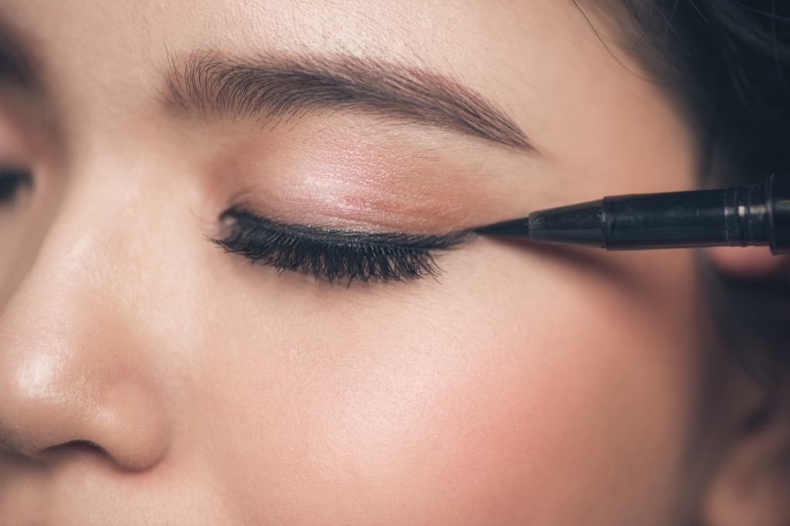
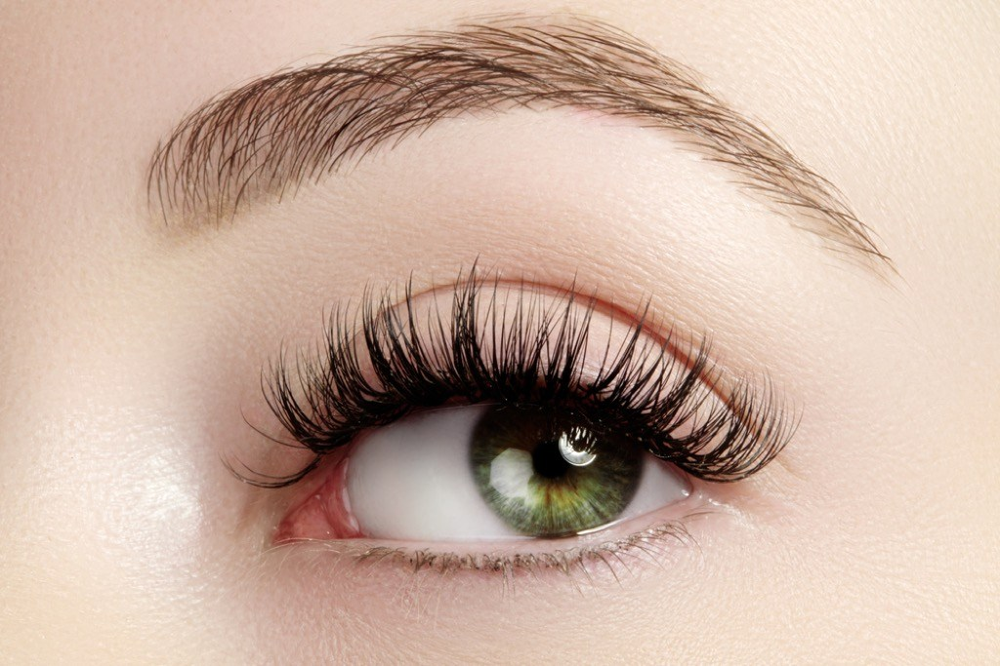

FOLLOWS
1| Prime your eyelids.
"Our skin becomes thinner as we age, especially around our eyes," says Stephanie Jones, licensed esthetician and owner of The Blushery in Beacon, New York. "As the eyelids become thin, they also become slightly transparent, resulting in uneven tones of purples, blues, and reds. Tap a very thin layer of eye primer to the lids to even out the tone to a neutral color, which will result in a more vibrant, long-wearing eye shadow application."
2| And prime your face, too.
While you may be contending with larger pores and fine lines when you're in your 50s, the right primer can help you fight back. "A thin layer of thick primer applied to moisturized skin will instantly smooth texture and reduce the appearance of large pores and fine lines, allowing foundation to glide seamlessly," says Jones. It's one of the easiest tricks for makeup for older women.
3| Move makeup outward from the center of your face.
Though conventional wisdom tells us to apply our makeup in full coverage, doing so can actually fail to cover up some of the signs of aging, says Jones.
"Start with a good creamy foundation around the center of the face where it needs the most coverage and tends to be the most vascular and prone to blemishes—like the nose, nasolabial folds, and cheeks. Blend outward towards ears, hairline, and neck with a fluffy, flat brush for the most even application, and to buff out any harsh lines," she recommends.
4| Fill in your brows.
The age of the skinny brow has come and gone, but for many women over 50, channeling that inner Cara Delevingne is easier said than done. "As we age, our brows tend to stop growing back after waxing and tweezing. They also start to sprout some unwanted grays throughout," says Jones. "A brow gel, similar to mascara, but with much less opacity, is the perfect fix. Take the brow gel wand and brush throughout brows in and upward and outward motion to fill in sparse spots and to coat grays."
5| Begin with your eyes.
While many people begin their makeup look with foundation and powder, if you want to minimize the risk of excess makeup settling in your fine lines and wrinkles, you should start with your eyes instead.
"When dusting on eyeshadow, small shadow particles from the makeup brush fall and land directly under the eyes and onto the cheeks. This is called fallout," says Jones. "When this happens, it gives a dark appearance, enhancing the dreaded dark under eye circles. Wait to apply any face makeup until after eyes are complete."
6| Switch up your eyeliner style.
At 20, lining your eyes meant little more than dragging that pencil across your lid.
However, cautions Jones, getting the same effect in your 50s is an entirely different ball game."Eyelids have wrinkles and are more hooded making it much more difficult than to just swipe a pencil smoothly across the lid and go. Try dotting a pencil along the upper lash line and smudge with a pencil sponge," suggests Jones.
7| Skip the face powder.
The bad news? After 50, those days of touching up with face powder may have come and gone. The good news? Your makeup will look better without it.
"With the exception of a little pressed powder to set under eye concealer and eliminate shine, skip this step," says Jones. "Powders make skin appear dry and is noticeable as it sits on fine facial hairs, which unfortunately, many of us develop as we get older."
8| Opt for a cream blush.
If you want to enjoy a more youthful look and have your whole face come together better, pick a cream blush over a powder.
"Use a cream blush for the most natural, dewy flush," says Jones.
"Our favorite is Face Stockholm Cream Blush in Malmo ($25), because it has a little shimmer and acts as both a blush and highlighter when applied to the cheekbones."
9| Ditch the shimmer if you have textured skin.
While many assume that shimmery products convey youthfulness, using them on skin that's either textured by acne, scarring, or wrinkles, can make you look older than you are.
"Avoid shimmer on textured skin," says licensed cosmetologist and national Living Proof educator Shreeda Tailor, owner of J. Tailor Salon in Houston. "Shimmer will accentuate texture."
10| Skip the purple tones if you have discoloration.
A plum tone on your eyes may seem like the key to the perfect fall look, but you'd be better off avoiding that hue if you're over 50. "Purple tones will look like bruising or enhance dark circles," says Tailor.
11| Opt for more natural shades.
Who says you need dramatic makeup to make your face look gorgeous? If you're over 50, natural shades, like taupe shadows and nude lips, will serve you better. "Keep makeup neutral," says Tailor.
12| Ditch the matte looks.
While overloading on shine can draw too much attention to parts of your face bearing fine lines and wrinkles, that doesn't mean a matte look is a better choice. So, what's the solution? "Instead of shimmer, opt for sheen," recommends Tailor. That means prioritizing a natural glow, rather than loading up on light-reflecting products, or, worse yet, glitter.
13| Lock in your look with setting spray.
As your skin changes with age, your makeup may fade faster than it did in decades past. Fortunately, setting your look with the right product can not only keep your face on all day, it can keep your face looking radiant, too.
"Keep skin dewy looking with moisturizing setting spray," suggests Tailor.
14| Line your waterline.
Want to make your eyes look bigger and brighter in one fell swoop? Try lining your waterline—the visible part of your lower lid before your lashes.
"Use a nude shadow or liner to line the waterline," recommends Tailor. "This makes eyes appear bigger and more awake. Also apply the matte nude color to inner corners. Eyes will appear brighter. These techniques should be done standing back from the mirror because you want to see the effect of it not actually see the product."
15| Keep your eyeshadow simple.
While perfecting that masterful cat eye is a noble goal, if you want to make the most of your makeup after 50, it's time to take a "less is more" approach.
"As you become more mature, move towards a classic makeup style. Use softer colors on eyes. Try to move away from trendy eyeshadow colors like bright blue, lime green or hot pink on the eyes. Instead go with mauve, peach or violet for some color," says makeup artist Mindy Green, founder of mobile beauty salon MG Beauty.
16| Line your lips.

As we age, the lines around our mouths become more noticeable, often meaning that lipstick begins to settle in places it's not meant to go. The good news? There's a simple solution: lip liner. "Make sure you use liner to help define your lips. The line can become less defined as we age," says Green.
17| Skip the highlighter on your cheeks.
A little highlighter on your cheekbones may made you look glowing a decade or two earlier, but as your skin begins to age, it can draw unwanted attention to areas that are starting to wrinkle or sag. "With cheeks, be cautious of highlighting. Anything with shimmer will emphasize the area it's placed on," says Green.
18| Get a dewy look with facial oil.
That said, there's no reason you can't enjoy a dewy makeup look. The easiest way to achieve it? A little oil. "Pressing a face oil onto the cheekbones will give a glow and help hydrate, which can help with the signs of aging, says Green.
19| Use lip balm.
Makeup for older women means preparing your skin as best as possible, and that includes your lips. That staple product you never went anywhere without in middle school can save you when you're trying to make your face look fabulous after 50, too. "Use a lip balm or plumper to keep your lips looking fuller and more youthful," suggests Green.
20| Upgrade your skincare routine.
While you can shell out thousands on makeup, if you aren't taking care of your skin, you're not addressing the root of the problem—and that right there is one of the easiest tricks for makeup for older women. "Good makeup starts with good skincare," says Jones. A daily routine of cleanser, moisturizer, sun protection, and nighttime serum will keep skin smooth and hydrated."
As for what to look for in a moisturizing product, Green suggests, "Hydrate daily with a moisturizer that contains hyaluronic acid, peptides, sun protection and vitamins to help firm and plump the skin."